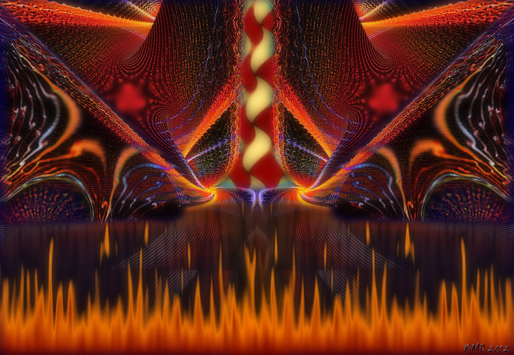

2 Шел Шива по шоссе, сокрушая сущее...
Согласно индийской философии существует три аспекта вселенной - созидание (Брахма), поддержание (Вишну) и разрушение (Шива). При отсутствии любого из них вселенная не сможет существовать.
Что такое разрушительный аспект? Уничтожение иллюзий - покрова майи, очищение, проникновение в тайны бытия, расщепление старого, отжившего - это омолаживание организма нашей вселенной. Катаболитические процессы, только во вселенских масштабах. Если их не будет - организм погибнет от амы, собственных токсинов и шлаков.
Согласно некоторым традициям, в каждом человеке присутствуют три аспекта, но в разных пропорциях. Люди с ярко выраженным аспектом разрушения - это те, кто привык докапываться до истины, уничтожать вредное и отжившее: ученые, исследователи, аналитики, детективы, хирурги...
Кто как ни разрушитель - Джордано Бруно, который взошел на костер ради того, чтобы разрушить сложившиеся ложные представления и открыть людям, что земля круглая и вертится вокруг солнца? Пусть современные историки говорят, что все было иначе, но в данном случае - это собирательный образ. А сколько было противников в научной среде у корпускулярно-волнового дуализма среди приверженцев планетарной модели? Но тем не менее, настоящие ученые смогли отстоять свою "революционную" правду.
Есть два понятия: разрушение и нигилизм. Разрушительный аспект Шивы - не есть нигилизм, декаданс. Нигилизм - всего лишь инверсия, поэтому вещь бессмысленная, это неконструктивное отрицание. Не получится «сперва... место расчистить», а «строить» потом, как желал того Базаров.
Если истинное разрушение - это обоснованное отрицание "планетарной" модели ядра атома и предложение новой, но нигилизм - просто отрицание сей модели без каких-либо оснований. Декаданс - аналогично, это не естественный катаболизм, это упадок, который чаще всего приводит к еще большему погружению в иллюзии и накоплению токсинов.
В некоторых современных сектантских течениях одним из грехов является сомнение - прямое следствие третьего (разрушительного) аспекта! А что, как не сомнение - верный спутник ученого, помогающий ему находить дорогу к истине? Частенько случается так: есть хорошие парни - хорошие потому, что делают то, что "мудрый старче" им однажды завещал, не пропуская поступающую информацию через сито критического мышления, короче "Credo quia absurdum est". А еще есть плохие парни, от которых, как многим кажется, сплошные неприятности. Эти плохие парни - те, кто однажды усомнился, что хорошие делают правое дело, за что "рыцари света" решили им навалять и объявили злом. Нередко тем, кто ищет свой путь к правде, истинной природе мира, исторической справедливости, начинают чинить препоны. Причем делают это не какие-то злобные демоны и враги рода человеческого, а обычные люди - те, которые не знают правду и знать не желают. Ведь куда проще повторить байку, которую человек слышал тысячу раз и оскорбить историческую личность вместо того, чтобы поднять документы и честно разобраться во всем самому. Когда же наконец мы получим нашу настоящую историю без всей этой вечной лжи? Скольким еще плохим парням придется пострадать, чтобы собрать её по крупицам и вынести на свет божий?
Bring me into the company of those who seek the truth, and deliver me from those who’ve found it.
